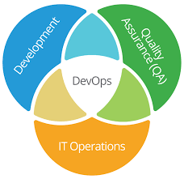

自动化运维
- 批量运维：减少重复劳动和人为失误
- 监控报警：发现异常并报警
- 持续集成：通过CI/CD工具，结合Docker、K8s，运用自动部署工具或API等手段，完成项目持续迭代，应用的持续部署
- 日志平台：性能分析、故障定位
- 配置管理：通过代码使基础架构的配置和管理自动化
- 代码审查：保证代码质量、代码安全
- ...
DevOps
DevOps 是一种文化、一种理念。

or

DevOps 的核心价值观 是 团队文化(Culture)、 自动化(Automation)、 评估(Measurement)和 分享(Sharing)（CAMS），同时，团队对 DevOps 的执行力也是 DevOps 能否成功的重要因素。
- 团队文化让大家团结一致
- 自动化是 DevOps 的基础
- 评估保证了及时的改进
- 分享让 CAMS 成为一个完整的循环过程
DevOps 的另一个思想是任何东西，包括服务器、数据库、网络、日志文件、应用配置、文档、自动化测试、部署流程等，都可以通过代码来管理。